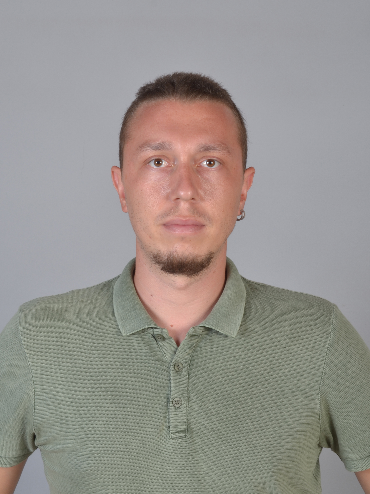

Osman BATIR

Özet
2010 yılından beri Matematik Öğretmeni olarak görev yapıyorum.
Ancak lise öğrenimim boyunca hep yazılıma merak duydum. Kendimi hep yazılım konusunda geliştirmeye çalıştım.
Bunların yanında Robotik Kodlama da ilgi alanlarım içerisinde yer aldı. Ve onunla ilgili de eğitim tamamlayıp,
sertifikamı aldım.
Eğitim
- Lise - Aydın Lisesi (2005 - 2009)
- Lisans - Akdeniz Üniversitesi - Fen Fakültesi - Matematik Bölümü (2009-2013)
- Pedagojik Formasyon - Aydın Adnan Menderes Üniversitesi- Eğitim Fakültesi (2015)
İş Tecrübeleri
Matematik Öğretmeni
- Antalya - Zafer Dershanesi (2010-2013)
- Aydın Değişim Dershanesi - (2013-2015)
- Aydın Değişim Anadolu Lisesi - (2015-2021)
- Aydın Doğa Koleji - (2021-2022)
- Milas- İMİ Koleji (2022 - halen)
Beceriler
- İngilizce: ★★★★☆
- Microsoft Office Uygulamaları: ★★★★☆
- Robotik Kodlama: ★★★★☆
İletişim